Tema 3.B.38
La política agrícola de la Unión Europea. Problemas económicos y procesos de reforma. La política pesquera común.
PAC y PPC: sostenimiento de precios, desacoplamiento, capitalización en la tierra, PAC 2023-2027 y post-2027, Gordon-Schaefer, RMS y cuotas de pesca.
Exclusivo Material exclusivo de victorgutierrezmarcos.es y la app Oposición TCEE · DCE. Puedes usarlo libremente para tu estudio personal. No se autoriza su incorporación a otras plataformas, aplicaciones o servicios. Condiciones de uso.
Introducción
Enganche:
«Aunque la mona se vista de seda, mona se queda», dice el refrán. En sesenta años la PAC ha cambiado varias veces de traje: precios garantizados, pagos por hectárea, pagos desacoplados, pagos verdes. En febrero de 2024, miles de tractores bloquearon Bruselas, París y Madrid. Los agricultores protestaban contra la burocracia, las exigencias ambientales y la competencia de las importaciones, pero detrás había un dato incómodo: de cada 100 euros de pagos directos de la Política Agrícola Común, 85 van a la cuarta parte de los perceptores que más reciben, y la Unión ha perdido casi 4 de cada 10 explotaciones desde 2005.
En el mar pasa algo parecido: sin reglas, el barco grande captura antes que el pequeño y entre todos vacían el caladero.
La pregunta que recorre la exposición es: ¿puede una política común sostener a la vez la renta de quien produce, los recursos de los que vive y el bolsillo de quien paga?
Relevancia:
Presupuestaria: la PAC es la primera política de gasto de la Unión desde su origen. Tiene 386.600 millones de euros en el marco financiero plurianual (MFP) 2021-2027, casi la tercera parte del total, y llega a unos 6 millones de perceptores. En los años 80 se llevaba casi 3 cuartas partes del presupuesto [ver tema 3.B.37].
Institucional: es la política común más antigua y la más integrada; durante décadas fue «la» política comunitaria, y con la pesca es una de las pocas en las que la Unión fija precios, ayudas y cuotas.
Para España: es el segundo perceptor de la PAC, tras Francia, con unos 7.400 millones de euros al año, y tiene la mayor flota pesquera de la Unión [ver tema 4.A.4] [ver tema 4.A.30].
Contextualización:
Qué es: la Política Agrícola Común (PAC) es el conjunto de reglas e instrumentos con que la Unión interviene en la agricultura: regula los mercados agrarios, sostiene la renta de los agricultores y financia el desarrollo rural. La Política Pesquera Común (PPC) gestiona los recursos pesqueros, la flota, los mercados de la pesca y las relaciones pesqueras con terceros países.
Su lugar en los Tratados: la agricultura y la pesca son competencias compartidas entre la Unión y los Estados miembros (artículo 4 del TFUE), salvo la conservación de los recursos biológicos marinos, que es exclusiva de la Unión (artículo 3) [ver tema 3.B.36].
Su evolución en una frase: la PAC nació para que Europa no volviera a pasar hambre, con precios garantizados; tuvo tanto éxito que creó excedentes, y desde 1992 se ha ido reformando hacia pagos desligados de la producción y condicionados al medio ambiente. La PPC pasó de repartir el acceso al mar a intentar que los peces no se acaben.
Problemática:
¿Por qué intervienen los poderes públicos en la agricultura y en la pesca, y por qué hacerlo en común?
¿Cómo se diseñó la PAC y por qué hubo que reformarla una y otra vez?
¿Qué problemas económicos sigue teniendo hoy y adónde va después de 2027?
¿Cómo se evita la sobrepesca de un recurso que es de todos?
Estructura:
La exposición sigue la historia y los problemas de cada política:
I. La PAC: fundamentos y configuración inicial (I): por qué una política agraria y por qué común, su marco jurídico y la PAC de los precios garantizados (1962-1992), con el modelo del sostenimiento de precios.
II. Problemas económicos y procesos de reforma (II): de MacSharry a la PAC 2023-2027, con el modelo del desacoplamiento; la PAC actual y su simplificación; y los problemas que siguen abiertos (distribución, capitalización en la tierra, relevo, medio ambiente, comercio, ampliación) y la propuesta para después de 2027.
III. La política pesquera común (III): la economía de un recurso común (el modelo de Gordon y Schaefer), los 4 ejes iniciales, las reformas de 2002 y 2013 y la situación actual.
3.B.38. La política agrícola de la Unión Europea. Problemas económicos y procesos de reforma. La política pesquera común
Introducción2′30″
I. La PAC: fundamentos y configuración inicial8′
1. Justificación, naturaleza y objetivos
2. Configuración inicial de la PAC (1957-1992)
II. Problemas económicos y procesos de reforma de la PAC10′30″
1. Desarrollo, resultados y reformas (1984-2020)
2. La PAC 2023-2027 y su simplificación
3. Problemas actuales y retos futuros
III. La política pesquera común8′
1. Justificación, naturaleza y objetivos
2. Análisis histórico: la PPC de 1983
3. Desarrollo y reformas: 2002 y 2013
4. Situación actual
Conclusión1′
Reparto del cante: introducción, 2′30″; I, 8′ (I.1, 3′; I.2, 5′, de ellos 2′30″ para el modelo del sostenimiento de precios); II, 10′30″ (II.1, 4′30″, con 1′30″ para el desacoplamiento; II.2, 2′30″; II.3, 3′30″, con 1′30″ para la capitalización en la tierra); III, 8′ (III.1, 3′30″, con 2′30″ para el modelo de Gordon-Schaefer; III.2, 1′; III.3, 1′30″; III.4, 2′), y conclusión, 1′. Los gráficos y figuras imprescindibles son el sostenimiento de precios, la evolución del gasto de la PAC, el desacoplamiento, la capitalización, la distribución de los pagos y los 2 paneles de Gordon-Schaefer. Lo que va en cajas grises, en notas y en los anexos es para las preguntas del tribunal.
Notación. \(x(p)\) es la demanda y \(q(p)\) la oferta de la Unión (como en el resto del temario); \(p^W\) el precio mundial, \(p^I\) el precio de intervención y \(s\) una ayuda por unidad producida. En la tierra, \(T\) es la superficie, \(R\) la renta anual por hectárea, \(\mathit{VPMg}_T\) el valor del producto marginal de la tierra, \(P_T\) su precio e \(i\) el tipo de interés. En la pesca, \(X\) es la biomasa de la población, \(\bar X\) su capacidad de carga, \(\gamma\) su tasa intrínseca de crecimiento, \(E\) el esfuerzo pesquero, \(\theta\) la capturabilidad, \(H\) la captura, \(Y(E)\) la captura sostenible, \(p\) el precio del pescado y \(c\) el coste por unidad de esfuerzo; RMS es el rendimiento máximo sostenible, MRE el máximo rendimiento económico y LA el libre acceso.
I. La PAC: fundamentos y configuración inicial
Empezamos por las razones de la PAC y por cómo se diseñó.
Conclusión anticipada: la agricultura tiene rasgos (demanda rígida, oferta que depende del clima, renta baja e inestable, efectos sobre el territorio y el medio ambiente) que justifican una política pública; que fuera común lo exigía el mercado común. La PAC de 1962 eligió el instrumento más distorsionador, el sostenimiento de precios: cumplió los objetivos de producción y abastecimiento, pero a costa de consumidores, contribuyentes y terceros países.
I.1. Justificación, naturaleza y objetivos
I.1.1. Relevancia
Cuantitativa: aunque su peso ha bajado (gráfico 4), la PAC sigue siendo, con la cohesión, la mayor partida del presupuesto de la Unión: 386.600 millones de euros en 2021-2027, de ellos 291.100 del Fondo Europeo Agrícola de Garantía (FEAGA) y 95.500 del Fondo Europeo Agrícola de Desarrollo Rural (FEADER), con 8.100 del NextGenerationEU. En 2024 fue el 23 % del gasto de la Unión y el 0,31 % de su PIB [ver tema 3.B.37].
Cualitativa: es la primera política común de verdad, con mercado único, precios comunes y financiación común desde 1962, y ha sido el gran campo de pruebas de la integración (la primera crisis institucional, la de la «silla vacía» de 1965, nació de cómo financiarla) [ver tema 3.B.36].
Sectorial: la agricultura aporta hoy poco al PIB de la Unión y algo más al empleo, pero es la base de una industria agroalimentaria grande y exportadora, y sus 8,8 millones de explotaciones gestionan 156 millones de hectáreas, casi 2 quintas partes del territorio.
I.1.2. Justificación económica
¿Por qué una política agraria?
Casi todos los países desarrollados protegen su agricultura, y lo hacen por 3 tipos de razones: de eficiencia, de equidad y de economía política.
Eficiencia: los fallos de mercado [ver tema 3.A.23]:
externalidades negativas (contaminación del agua por nitratos y plaguicidas, erosión, emisiones de metano y de óxido nitroso) y positivas (paisaje, prevención de incendios, ocupación del territorio) [ver tema 3.B.31];
bienes públicos: la biodiversidad de los paisajes agrarios y la seguridad del abastecimiento alimentario, que tiene algo de seguro colectivo frente a guerras y crisis;
inestabilidad de los precios: la oferta agraria se decide antes de conocer el precio y depende del clima, y la demanda de alimentos es muy rígida, de modo que pequeños cambios en la cosecha mueven mucho los precios. La dinámica de la telaraña, que Ezekiel estudió precisamente con los cerdos y el maíz, muestra cómo la oferta retardada puede generar ciclos [ver tema 3.A.16]. Como los mercados de seguros y de futuros agrarios son incompletos, eso justifica instrumentos de estabilización.
Equidad: el «problema agrario». La renta agraria es inestable y, sobre todo históricamente, más baja que la del resto de la economía:
la ley de Engel: la elasticidad renta de la demanda de alimentos es menor que 1, así que, al crecer la renta, el gasto en alimentos pierde peso [ver tema 3.A.8];
la ley de King: como la demanda es rígida, una buena cosecha baja el precio más que proporcionalmente y reduce los ingresos del sector;
la rueda del progreso técnico (treadmill) de Cochrane (1958): el primero que adopta una mejora técnica gana, pero, cuando la adoptan todos, la oferta crece y el precio cae, y la ganancia acaba en manos del consumidor; quien no la adopta se queda atrás;
la baja movilidad del trabajo y de la tierra agrarios (explotaciones familiares, edad, capital específico) hace que el ajuste, salir del sector, sea lento.
Equidad territorial: mantener población y actividad en zonas rurales en riesgo de despoblación.
Economía política: Olson (1965) explica por qué un grupo pequeño y concentrado (los agricultores) consigue más protección que un grupo grande y disperso (consumidores y contribuyentes): cada agricultor gana mucho con la ayuda y cada consumidor pierde poco, así que solo a los primeros les compensa organizarse [ver tema 4.B.2]. Por eso la protección agraria crece a medida que los países se enriquecen y el sector se hace más pequeño.
El problema agrario hoy. La brecha de renta que preocupaba en los años 50 se ha reducido mucho: las explotaciones son más grandes y capitalizadas, muchos hogares agrarios tienen rentas no agrarias y el empleo agrario se ha desplomado. Aun así, según la Comisión, en 2017 un agricultor ganaba de media algo menos de la mitad de lo que podía ganar en otro empleo (un tercio 10 años antes), con una dispersión enorme entre explotaciones; los pagos directos son en torno al 23 % de la renta de los factores agrarios. Y la tendencia a la baja de los precios reales agrarios se ha interrumpido varias veces desde 2007 (biocombustibles, demanda de los emergentes, guerra de Ucrania).
¿Por qué una política común?
Si los 6 fundadores hubieran mantenido sus políticas nacionales de precios (todas existían en 1957), el mercado común agrario habría sido imposible: con precios garantizados distintos, cada país habría tenido que mantener sus fronteras para que no le entraran productos más baratos de los vecinos. Un mercado único con precios sostenidos exigía precios comunes, una protección exterior común y una financiación común [ver tema 3.B.39].
Fue además parte del pacto fundacional: Francia, gran productor agrario, aceptó el mercado común industrial que interesaba a Alemania a cambio de un mercado agrario protegido y financiado en común.
I.1.3. Marco jurídico
Competencia compartida (artículo 4.2.d del TFUE): los Estados pueden legislar en la medida en que la Unión no lo haya hecho; en la práctica, la regulación común es tan densa que deja poco margen nacional, salvo en la aplicación (los planes estratégicos) y en las ayudas de Estado autorizadas.
Fundamentos: artículos 38 a 44 del TFUE:
el artículo 38 define el mercado interior agrario e incluye en los «productos agrícolas» los de la pesca, por eso las 2 políticas comparten base jurídica;
el artículo 39 fija los objetivos de la PAC, que no han cambiado desde 1957:
incrementar la productividad agrícola;
garantizar un nivel de vida equitativo a la población agrícola;
estabilizar los mercados;
garantizar la seguridad de los abastecimientos;
asegurar al consumidor suministros a precios razonables.
el artículo 40 crea la organización común de los mercados agrícolas (OCM) y prevé los fondos de orientación y garantía;
el artículo 42 limita la aplicación de las normas de competencia a la agricultura a lo que decidan el Parlamento y el Consejo (por eso las organizaciones de productores pueden negociar en común) [ver tema 3.B.39].
Decisión (artículo 43): desde el Tratado de Lisboa, el procedimiento legislativo ordinario, a propuesta de la Comisión y previa consulta al Comité Económico y Social Europeo; pero el Consejo, solo a propuesta de la Comisión, adopta las medidas sobre la fijación de los precios, las exacciones, las ayudas y las limitaciones cuantitativas y sobre la fijación y el reparto de las posibilidades de pesca (artículo 43.3). Los límites entre las 2 vías han llevado al Parlamento y al Consejo ante el Tribunal de Justicia más de una vez.
Gestión: la Comisión (Dirección General de Agricultura y Desarrollo Rural) gestiona la PAC en régimen de gestión compartida con los Estados, que pagan las ayudas a través de organismos pagadores acreditados (en España, el Fondo Español de Garantía Agraria, FEGA, que coordina los organismos de las comunidades autónomas).
Recapitulación del I.1: hay razones de eficiencia y de equidad para intervenir, y razones de economía política que explican por qué se interviene más de lo que justificarían las primeras. Con esos objetivos del artículo 39, veamos qué instrumentos eligieron los fundadores.
I.2. Configuración inicial de la PAC (1957-1992)
I.2.1. Origen y principios
El Tratado de Roma (1957) ordenaba crear una política agrícola común, pero no decía cómo.
La Conferencia de Stresa (julio de 1958), convocada por el comisario Sicco Mansholt, fijó sus 2 grandes líneas: una política de precios y mercados y una política de estructuras.
1962: se aprueban las primeras OCM (cereales, porcino, huevos, aves, frutas y hortalizas y vino) y se crea el Fondo Europeo de Orientación y de Garantía Agrícola (FEOGA), con 2 secciones: Garantía, para los precios y mercados (en torno al 90 % del gasto), y Orientación, para las estructuras.
3 principios, aprobados en 1962:
unidad de mercado: libre circulación de los productos agrarios, precios comunes y normas sanitarias armonizadas;
preferencia comunitaria: el producto comunitario tiene prioridad frente al importado, al que se protege con exacciones variables, contingentes y cláusulas de salvaguardia;
solidaridad financiera: los gastos se pagan con el presupuesto común, y los ingresos de las exacciones agrícolas pasaron a ser recursos propios (Decisión de 1970) de la Comunidad [ver tema 3.B.37].
I.2.2. Política de precios y mercados y política de estructuras
Los precios institucionales: cada año, el Consejo fijaba para cada producto de una OCM:
un precio indicativo (o guía): el que se quería que alcanzara el mercado; no activaba ninguna actuación;
un precio de intervención: el precio mínimo garantizado; si el mercado caía por debajo, los organismos públicos de intervención compraban y almacenaban el producto;
un precio de umbral (o de entrada): el precio mínimo al que podían entrar las importaciones.
Los instrumentos en frontera:
exacciones reguladoras variables (prélèvements): un gravamen igual a la diferencia entre el precio de umbral y el precio mundial, que variaba con este para que ninguna importación entrara por debajo del umbral;
restituciones a la exportación: una subvención igual a la diferencia entre el precio interior y el mundial, para vender fuera los excedentes [ver tema 3.B.7].
Un problema monetario: los precios comunes se fijaban en unidades de cuenta agrícolas; cuando en 1969 Francia devaluó y Alemania revaluó, mantener los precios en moneda nacional obligó a crear tipos de cambio especiales («verdes») y montantes compensatorios monetarios en las fronteras interiores, que fragmentaron el mercado único hasta 1993 (anexo A).
La política de estructuras, mucho más pequeña y cofinanciada por los Estados, apoyaba la modernización de las explotaciones, la instalación de jóvenes, la jubilación anticipada y la formación. El Plan Mansholt (1968) proponía sacar del campo a 5 millones de agricultores y concentrar la tierra en explotaciones viables; chocó con la oposición agraria y quedó reducido a las directivas socioestructurales de 1972.
I.2.3. El modelo del sostenimiento de precios
a) Idea
¿Qué cuesta sostener un precio interior por encima del mundial y quién lo paga? El análisis de los excedentes del consumidor y del productor permite medirlo [ver tema 3.A.16], y explica los 3 grandes problemas de la PAC de precios: el coste presupuestario, los excedentes y los conflictos con terceros países.
b) Modelo
i) Supuestos
Un producto homogéneo y competencia perfecta en la Unión, con demanda \(x(p)\) y oferta \(q(p)\).
La Unión es primero un país pequeño: toma como dado el precio mundial \(p^W\), que está por encima de su precio de autarquía, de modo que con libre comercio ya exporta \(q_0-x_0\).
La Unión garantiza un precio \(p^I>p^W\): compra lo que no se vende a ese precio, impide con la exacción variable que entren importaciones más baratas y exporta los excedentes pagando la restitución \(p^I-p^W\) por unidad.
Bienestar medido con los excedentes del consumidor y del productor y el saldo presupuestario.
ii) Desarrollo
Paso 1: cantidades. Con el precio \(p^I\):
los consumidores compran menos, \(x_1<x_0\);
los productores producen más, \(q_1>q_0\);
el excedente que hay que exportar con restitución crece de \(q_0-x_0\) a \(q_1-x_1\) (gráfico 1).
Paso 2: quién gana y quién pierde, frente al libre comercio:
los consumidores pierden el área entre \(p^W\) y \(p^I\) a la izquierda de la demanda;
los productores ganan el área entre \(p^W\) y \(p^I\) a la izquierda de la oferta;
el presupuesto paga las restituciones, \((p^I-p^W)(q_1-x_1)\): el rectángulo discontinuo.
Paso 3: el saldo. Sumando, lo que ganan los productores no compensa lo que pierden los consumidores y los contribuyentes; la diferencia son 2 triángulos de pérdida irrecuperable:
\[\Delta W=-\big(\underbrace{b}_{\text{consumo}}+\underbrace{d}_{\text{producción}}\big)<0\tag{1}\]
\(b\): unidades que los consumidores valoraban por encima de \(p^W\) y que ahora se venden fuera a \(p^W\);
\(d\): unidades que se producen con un coste mayor que \(p^W\), el precio al que se venden fuera.
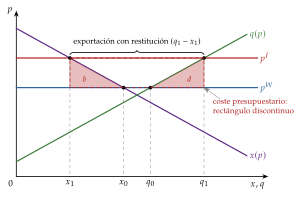
Fuente: elaboración propia. Demanda \(p=5-0{,}5x\), oferta \(p=0{,}5+0{,}5q\), \(p^W=3\) y \(p^I=4\): \(x_0=4\), \(q_0=5\), \(x_1=2\), \(q_1=7\). Los consumidores pierden 3, los productores ganan 6 y las restituciones cuestan 5: la pérdida neta es 2 (\(b=d=1\)).
Paso 4: el país grande. La Comunidad de los años 80 era el segundo exportador agrario del mundo: al volcar sus excedentes, hundía el precio mundial \(p^W\). Eso tiene 2 efectos:
cada unidad exportada necesita una restitución mayor, y el coste presupuestario se dispara;
los productores de terceros países (Estados Unidos, el grupo de Cairns, los países en desarrollo) pierden mercados y precio: es una subvención a la exportación de un país grande, que empeora su propia relación real de intercambio y exporta el ajuste [ver tema 3.B.7].
Paso 5: la estabilidad. Si el precio interior está fijo, toda la variación de la oferta y la demanda mundiales recae sobre el resto del mundo: el sostenimiento interior aumenta la volatilidad de los precios mundiales.
iii) Implicaciones
Es una transferencia muy cara: con los números del gráfico, por cada 6 euros que ganan los productores, consumidores y contribuyentes pierden 8. Y la ganancia se reparte en proporción a lo producido, así que va sobre todo a las explotaciones grandes.
Es regresiva: la pagan en parte los consumidores, y el gasto en alimentos pesa más en los hogares pobres (ley de Engel).
Genera excedentes: con un precio por encima del de equilibrio la oferta crece y la demanda cae, y el excedente o se almacena o se exporta subvencionado.
Crea un conflicto comercial: es la razón de que la agricultura fuera el gran escollo de la Ronda Uruguay [ver tema 3.B.33].
c) Extensiones
Si la Unión importa al precio mundial, el análisis es el mismo con la exacción variable: el arancel que sube con la caída del precio mundial aísla al mercado interior y los ingresos de la exacción reducen el coste neto, hasta que la producción supera al consumo y la Unión pasa a exportar con restitución. Es lo que le ocurrió a la Comunidad con los cereales, el azúcar, la leche y la carne de vacuno a finales de los 70.
Las cuotas de producción (leche, 1984; azúcar) limitan \(q\) al nivel de la cuota: reducen el excedente y el gasto, pero crean una renta para quien tiene la cuota, que se capitaliza en su valor, y congelan la estructura productiva.
La retirada de tierras (set-aside) limita un factor en lugar del producto: los agricultores retiran sus peores tierras, así que la producción baja menos que la superficie (slippage).
d) Evidencia empírica
La medida de la OCDE: la estimación del apoyo al productor (producer support estimate, PSE) suma lo que los agricultores reciben por la diferencia entre precios interiores y mundiales y por pagos públicos, en porcentaje de sus ingresos brutos. En la Unión era del 38,5 % de media en 1986-1988 y del 18,2 % en 2025, algo más que la media de la OCDE (gráfico 2); casi todo el apoyo de los años 80 era sostenimiento de precios, y hoy casi todo son pagos.
La eficiencia de la transferencia: la OCDE estimó que solo en torno al 25 % de lo que cuesta el sostenimiento de precios acaba como renta neta de los hogares agrarios; el resto se va en insumos, en la renta de la tierra y en pérdidas de eficiencia.
El coste de la PAC de precios: los estudios de equilibrio general de finales de los 80 estimaban la pérdida neta de bienestar de la PAC en torno al 1 % del PIB de la Comunidad.
Los excedentes: a mediados de los 80, los almacenes públicos de intervención acumulaban más de un millón de toneladas de mantequilla: eran las «montañas» de mantequilla y de cereales y los «lagos» de vino y de leche de la PAC.
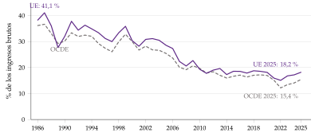
Fuente: OCDE, Agricultural Policy Monitoring and Evaluation.
e) Valoración
El modelo muestra lo esencial: el sostenimiento de precios es una forma ineficiente, regresiva y conflictiva de apoyar la renta, porque usa un precio (que debería informar de la escasez) para redistribuir.
Pero es estático: no recoge el valor del seguro frente a la volatilidad ni la seguridad del abastecimiento, que en 1957 eran la prioridad, ni los efectos sobre el territorio.
Detrás está la regla de Tinbergen: hacen falta tantos instrumentos como objetivos1. La PAC de 1962 pedía a un solo instrumento, el precio, que diera productividad, renta, estabilidad, abastecimiento y precios razonables. Toda la historia de las reformas es la de ir separando instrumentos: el precio para el mercado, pagos para la renta, condiciones y contratos para el medio ambiente.
I.2.4. Valoración de la PAC entre 1962 y 1992
| Objetivo | ¿Logrado? | Por qué |
|---|---|---|
| Productividad | Sí | Los precios garantizados incentivaron la inversión y la mecanización; los rendimientos se multiplicaron |
| Nivel de vida equitativo | En parte | Subió la renta media, pero las ayudas, proporcionales a la producción, fueron sobre todo a las grandes explotaciones del norte |
| Estabilizar los mercados | En parte | Dentro sí, a costa de exportar la inestabilidad al mercado mundial |
| Seguridad del abastecimiento | Sí | La Comunidad pasó de importadora neta a exportadora en los grandes productos templados |
| Precios razonables | No | El consumidor pagaba por encima del precio mundial |
Fuente: elaboración propia a partir de Camarero Olivas, Tamarit Escalona y Anchuelo Crego (2019) y Cuenca García y Navarro Pabsdorf (2015).
Los problemas acumulados:
presupuestario: el gasto agrario llegó a absorber el 73 % del presupuesto comunitario en 1985 (gráfico 4);
excedentes estructurales en leche, cereales, carne de vacuno, vino y azúcar;
inequidad: en torno al 80 % de las ayudas iba al 20 % de los agricultores, una proporción que, como veremos, ha cambiado poco;
conflictos comerciales con Estados Unidos y el grupo de Cairns;
daño ambiental: el precio por tonelada premiaba la intensificación (fertilizantes, plaguicidas, drenajes, concentración ganadera).
Recapitulación del bloque I: la PAC de precios logró que Europa se abasteciera, pero con un instrumento que generaba excedentes, gasto y conflictos. El siguiente bloque cuenta cómo se fue desmontando ese instrumento y qué problemas quedan.
II. Problemas económicos y procesos de reforma de la PAC
Una vez vistos el diseño inicial y sus costes, pasamos a analizar cómo se ha reformado la PAC y qué problemas económicos quedan abiertos.
Conclusión anticipada: en 30 años, la PAC ha pasado de sostener precios a pagar a los agricultores por hectárea, sin ligar el pago a lo que producen, y a condicionar esos pagos al medio ambiente. Ha reducido las distorsiones y los conflictos comerciales, pero el pago por hectárea reparte mal, se capitaliza en el precio de la tierra y no ha frenado ni la pérdida de explotaciones ni el envejecimiento. La propuesta para después de 2027 quiere fundir la PAC con la cohesión en un solo fondo por Estado.
II.1. Desarrollo, resultados y reformas (1984-2020)
II.1.1. Los primeros frenos (1984-1988)
Las cuotas lecheras (1984): cada Estado y cada productor recibía una cantidad de referencia; lo que la superase pagaba una tasa suplementaria disuasoria. Duraron hasta el 31 de marzo de 2015.
Los estabilizadores presupuestarios (1988): si la producción superaba una cantidad máxima garantizada, el precio de intervención bajaba automáticamente. Se acompañaron de la línea directriz agrícola, que limitaba el crecimiento anual del gasto agrario al 74 % del crecimiento del PNB comunitario, y de la primera retirada voluntaria de tierras.
Contuvieron el gasto, pero no atacaron la causa: el precio garantizado seguía premiando producir más.
II.1.2. La reforma MacSharry (1992)
Por qué: el gasto, los excedentes y, sobre todo, la Ronda Uruguay, bloqueada porque Estados Unidos y el grupo de Cairns exigían a la Comunidad reducir su apoyo agrario [ver tema 3.B.33].
Qué hizo, bajo el comisario Ray MacSharry:
bajar los precios de intervención: en torno a un 30 % en los cereales en 3 campañas y un 15 % en la carne de vacuno, para acercarlos a los mundiales;
compensar con pagos directos por hectárea (según los rendimientos históricos de cada región) y por cabeza de ganado, con límites de superficie y de cabezas;
retirada obligatoria de tierras (15 % al principio) para los productores de cultivos herbáceos que no fueran pequeños;
medidas de acompañamiento: ayudas agroambientales, forestación de tierras agrarias y jubilación anticipada.
El Acuerdo sobre la Agricultura: la reforma permitió cerrar el acuerdo de Blair House (noviembre de 1992) y la Ronda Uruguay. Los pagos de MacSharry, ligados a superficies y cabezas fijas, cupieron en la caja azul, exenta de reducción, y la bajada de precios redujo la necesidad de restituciones, de modo que los compromisos de reducción de la caja ámbar y de las exportaciones subvencionadas apenas obligaron a la Comunidad a cambios adicionales [ver tema 3.B.33].
Valoración: fue la primera reforma de fondo. Redujo los excedentes y trasladó parte del coste de los consumidores a los contribuyentes, que es más progresivo y más transparente. Pero los pagos seguían acoplados a la superficie y al ganado, y consagraron las diferencias históricas entre regiones y explotaciones.
La seguridad alimentaria tras la crisis de las «vacas locas». La encefalopatía espongiforme bovina (EEB), detectada en el Reino Unido en 1986, se relacionó en 1996 con una variante de la enfermedad de Creutzfeldt-Jakob en personas, y en 1999 hubo en Bélgica una crisis de dioxinas en piensos. La respuesta fue un enfoque «de la granja a la mesa»: el Reglamento (CE) 178/2002 fijó los principios de la legislación alimentaria (análisis del riesgo, trazabilidad, principio de precaución) y creó la Autoridad Europea de Seguridad Alimentaria (EFSA), con sede en Parma. La seguridad de los alimentos pasó así a ser uno de los fundamentos de la política agraria.
II.1.3. El modelo del desacoplamiento
a) Idea
Si se quiere apoyar la renta de los agricultores, ¿cómo hacerlo sin distorsionar la producción? La respuesta de la teoría es el segundo teorema del bienestar: redistribuir con transferencias de suma fija y dejar que los precios hagan su trabajo [ver tema 3.A.22]. El pago desacoplado es el intento de la PAC de acercarse a esa suma fija.
b) Modelo
i) Supuestos
Un país pequeño que vende su producción al precio mundial \(p^W\), con una oferta \(q(p)\) creciente.
2 formas de dar la misma ayuda:
acoplada: \(s\) euros por unidad producida (o por hectárea de un cultivo concreto), de modo que el productor recibe \(p^W+s\) por unidad;
desacoplada: un pago \(D\) que no depende de lo que se produce hoy, sino de un periodo de referencia o de la superficie que se tiene.
Sin incertidumbre ni restricciones de crédito, y sin que el pago exija producir.
ii) Desarrollo
Paso 1: ayuda acoplada (panel izquierdo del gráfico 3):
el productor iguala su coste marginal a \(p^W+s\): la producción sube de \(q_0\) a \(q_1\);
el presupuesto paga \(s\,q_1\), pero el productor solo gana el trapecio entre \(p^W\) y \(p^W+s\) a la izquierda de la oferta;
la diferencia es el triángulo \(d\), el coste de producir unidades cuyo coste marginal supera lo que valen en el mercado mundial.
Con una oferta lineal de pendiente \(q'(p)\), la pérdida es:
\[\text{pérdida acoplada}=\tfrac12\,s\,(q_1-q_0)=\tfrac12\,s^2\,q'(p)\;>\;0=\text{pérdida desacoplada}\tag{2}\]
Paso 2: ayuda desacoplada (panel derecho): el pago no cambia el precio al que el productor decide cuánto producir, así que sigue en \(q_0\); cada euro del presupuesto es un euro de renta para el agricultor y no hay pérdida.
Paso 3: la eficiencia de la transferencia, lo que gana el productor por cada euro que cuesta: en el ejemplo del gráfico, 6/7 con la ayuda acoplada y 1 con la desacoplada. La pérdida crece con el cuadrado de la ayuda y con la elasticidad de la oferta: las ayudas acopladas son más caras cuanto más generosas.
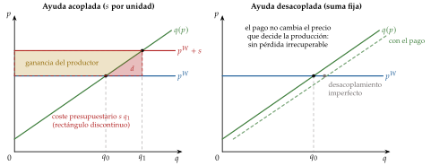
Fuente: elaboración propia. Oferta \(p=0{,}5+0{,}5q\), \(p^W=3\) y \(s=1\): \(q_0=5\) y \(q_1=7\); coste \(s\,q_1=7\), ganancia del productor 6 y pérdida \(d=1\). El desplazamiento de \(q'(p)\) es ilustrativo.
iii) Implicaciones
Orientación al mercado: el agricultor produce lo que el mercado paga, no lo que la ayuda premia. Desaparecen los excedentes estructurales.
Comercio: los pagos desacoplados cumplen los criterios de la caja verde de la OMC y no tienen límite [ver tema 3.B.33].
Separación de instrumentos: el pago se ocupa de la renta; el mercado, de los precios. Es la regla de Tinbergen aplicada.
c) Extensiones
Desacoplamiento imperfecto: un pago desacoplado puede seguir afectando a la producción por varias vías:
efecto riqueza: con aversión al riesgo decreciente con la riqueza, un agricultor más rico asume más riesgo y produce más;
restricciones de crédito: el pago financia inversiones que el banco no prestaría;
expectativas: si los agricultores esperan que el periodo de referencia se actualice, producir hoy es invertir en el pago de mañana;
entrada y salida: el pago mantiene en el sector explotaciones que, sin él, cerrarían (desplazamiento de \(q'(p)\) en el gráfico);
la tierra: si el pago exige tener tierra en buenas condiciones, se capitaliza en su precio (II.3.2).
Pagos acoplados que sobreviven: la PAC permite aún dedicar hasta el 13 % de los pagos directos (más un 2 % para proteaginosas) a ayudas acopladas a sectores en dificultad (vacuno, ovino, leche, arroz), por razones territoriales.
d) Evidencia empírica
Producción: los estudios encuentran que los pagos desacoplados de la PAC tienen efectos pequeños, pero no nulos, sobre la producción, mucho menores que los de los precios garantizados o los pagos acoplados.
Estructura: con datos de explotaciones europeas, el desacoplamiento de 2005 aceleró la desinversión y el abandono gradual de las explotaciones poco rentables, que ya no necesitaban producir para cobrar.
Composición del apoyo: en el gasto de la PAC, las restituciones y la intervención casi han desaparecido y los pagos desacoplados son hoy la mayor parte (gráfico 4).
e) Valoración
El desacoplamiento resolvió el problema del comercio y de los excedentes.
Pero abrió otro, de legitimidad: si el pago no depende de lo que se produce, ¿por qué se paga, y por qué más a quien más tierra tiene? La respuesta de las reformas posteriores fue doble: condicionar el pago a obligaciones ambientales («dinero público para bienes públicos») y redistribuirlo. Y queda la cuestión de quién se queda de verdad con el pago, que es el modelo de la capitalización en la tierra (II.3.2).
II.1.4. Agenda 2000, reforma Fischler (2003) y chequeo médico (2008)
Agenda 2000 (Consejo Europeo de Berlín, 1999), pensada para la ampliación al Este:
nuevas bajadas de los precios de intervención (cereales, vacuno, leche), compensadas con más pagos directos;
el desarrollo rural pasa a ser el segundo pilar de la PAC (Reglamento 1257/1999), inspirado en la Declaración de Cork (1996), con medidas de diversificación, agroambientales y de zonas desfavorecidas, cofinanciadas;
la condicionalidad ambiental y la modulación (pasar dinero del primer pilar al segundo) son voluntarias para los Estados.
La reforma Fischler (Luxemburgo, junio de 2003), la de mayor calado junto a la de 1992:
régimen de pago único (RPU): la mayoría de los pagos directos se funden en uno, desacoplado, calculado según lo que cada explotación cobró en 2000-2002 y ligado a derechos de pago por hectárea (en España, desde 2006);
condicionalidad obligatoria: el pago se reduce si no se cumplen los requisitos legales de gestión (medio ambiente, salud pública, sanidad animal, bienestar animal) y las buenas condiciones agrarias y medioambientales;
modulación obligatoria (el 5 % de los pagos por encima de 5.000 euros pasa al desarrollo rural) y un mecanismo de disciplina financiera;
los Estados podían mantener parte de los pagos acoplados, y muchos lo hicieron, de modo que el desacoplamiento fue parcial.
Los cambios intermedios:
2005: el FEOGA se divide en 2 fondos, el FEAGA, que financia el primer pilar, y el FEADER, el segundo (Reglamento 1290/2005, desde 2007);
2007: la OCM única (Reglamento 1234/2007) funde las 21 OCM sectoriales en un solo reglamento, al que se incorporan después las frutas y hortalizas y el vino;
2008: el chequeo médico suprime la retirada obligatoria de tierras, prepara el fin de las cuotas lecheras (con aumentos del 1 % anual), desacopla casi todo lo que quedaba y sube la modulación al 10 %.
II.1.5. La reforma de 2013
Tras la comunicación de la Comisión «La PAC en el horizonte de 2020» (2010) y 2 años de negociación, ya con el Parlamento como colegislador, se aprobaron los Reglamentos 1305 a 1308/2013, aplicados desde 2015 en los pagos directos.
Primer pilar: el pago único se sustituye por un sistema por capas:
un pago básico por hectárea, con convergencia interna de los importes (ninguna explotación por debajo del 60 % de la media de su región en 2019) y algo de convergencia entre Estados;
un pago verde (greening), el 30 % de la dotación, por diversificar cultivos, mantener pastos permanentes y dedicar el 5 % de la tierra arable a superficies de interés ecológico;
un pago a los jóvenes agricultores (hasta el 2 %) y, voluntarios, el pago redistributivo, las ayudas acopladas, las zonas con limitaciones naturales y un régimen simplificado de pequeños agricultores;
la figura del agricultor activo y una reducción de al menos el 5 % de los pagos de más de 150.000 euros.
Mercados: fin de las cuotas lecheras (2015) y de las de azúcar (2017); la intervención queda como red de seguridad; se crea una reserva para crisis y se refuerzan las organizaciones de productores.
Segundo pilar: 6 prioridades de desarrollo rural, con cofinanciación nacional.
Valoración: el pago verde se diseñó con tantas excepciones que el Tribunal de Cuentas Europeo concluyó que apenas cambió las prácticas (afectó a en torno al 5 % de la superficie agraria).
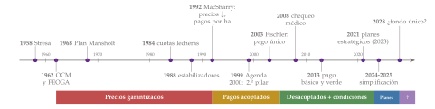
Fuente: elaboración propia a partir de Parlamento Europeo (2026d) y de los reglamentos citados.
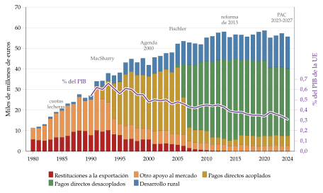
Fuente: Comisión Europea, DG AGRI, «CAP expenditure and CAP reform path».
Lectura del gráfico: hasta 1992, casi todo el gasto era apoyo al mercado (intervención y restituciones); desde 1993 crecen los pagos acoplados; desde 2005, los desacoplados, y el desarrollo rural gana peso. En porcentaje del PIB de la Unión, el gasto ha bajado del 0,66 % de 1993 al 0,31 % de 2024, y en el gasto de la Unión, del 73 % de 1985 al 23 % de 2024.
Recapitulación del II.1: en 20 años, la PAC desmontó el sostenimiento de precios y lo sustituyó por pagos desacoplados con condiciones. Veamos cómo es la PAC de hoy.
II.2. La PAC 2023-2027 y su simplificación
II.2.1. El nuevo modelo de aplicación
De dónde sale: la Comisión propuso en junio de 2018 una PAC «basada en resultados»; el acuerdo político llegó en junio de 2021, se aprobó en diciembre (Reglamentos 2021/2115, de los planes estratégicos; 2021/2116, de financiación, gestión y seguimiento; y 2021/2117, que modifica la OCM) y se aplica desde el 1 de enero de 2023, tras 2 años de transición.
La gran novedad, el plan estratégico de la PAC: la Unión fija los objetivos y los tipos de intervención, y cada Estado elabora un único plan para los 2 pilares, con un diagnóstico (análisis DAFO), una estrategia, metas cuantificadas e indicadores, que aprueba la Comisión. Se pasa de controlar el cumplimiento de reglas a seguir resultados.
10 objetivos específicos: 3 económicos (renta, competitividad, posición en la cadena), 3 ambientales (clima, recursos naturales, biodiversidad), 3 sociales (relevo generacional, zonas rurales, alimentación y salud) y uno transversal (conocimiento e innovación).
| Tipo | Contenido |
|---|---|
| Pagos directos (FEAGA) | Ayuda básica a la renta para la sostenibilidad (por hectárea; convergencia interna: al menos el 85 % de la media en 2026); pago redistributivo complementario (al menos el 10 % de los pagos directos); ayuda a jóvenes agricultores (al menos el 3 %); ecorregímenes (al menos el 25 %); ayuda acoplada (hasta el 13 + 2 %) |
| Intervenciones sectoriales (FEAGA) | Programas de frutas y hortalizas, vino, apicultura, aceite de oliva, lúpulo y otros |
| Desarrollo rural (FEADER) | Compromisos agroambientales y climáticos, zonas con limitaciones naturales, inversiones, instalación de jóvenes, cooperación (LEADER), gestión de riesgos, conocimiento; al menos el 35 % para fines ambientales y climáticos |
| Mercados (OCM) | Intervención pública y almacenamiento privado como red de seguridad, medidas excepcionales y reserva agrícola de al menos 450 millones al año |
Fuente: elaboración propia a partir de los Reglamentos (UE) 2021/2115 y 1308/2013.
II.2.2. La nueva arquitectura verde y la condicionalidad social
La protección del medio ambiente se organiza en 3 escalones (figura 2):
condicionalidad reforzada, obligatoria para todo el que cobra: 11 requisitos legales de gestión y 9 normas de buenas condiciones agrarias y medioambientales (BCAM: rotación, protección de humedales y turberas, franjas junto a los cauces, superficie no productiva…); absorbe el antiguo pago verde;
ecorregímenes, voluntarios para el agricultor pero obligatorios de ofrecer para el Estado, que paga anualmente por prácticas que van más allá de la condicionalidad;
compromisos agroambientales y climáticos del FEADER, plurianuales y mejor pagados.
Condicionalidad social: desde 2025 es obligatoria en todos los Estados (España la aplica desde 2024): se reduce el pago a quien incumple normas laborales y de seguridad y salud en el trabajo.
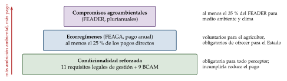
Fuente: elaboración propia a partir del Reglamento (UE) 2021/2115.
II.2.3. La simplificación de 2024 y 2025
Las protestas (finales de 2023 y principios de 2024): subida de los costes (energía y fertilizantes), precios bajos, burocracia, exigencias ambientales como dejar el 4 % de la tierra arable sin producir, y competencia de las importaciones de Ucrania y, en perspectiva, del Mercosur.
La primera respuesta, el Reglamento (UE) 2024/1468, aprobado en 2 meses y en vigor desde el 25 de mayo de 2024:
la BCAM 8 deja de exigir el 4 % de superficie no productiva (los Estados deben pagarla como ecorrégimen); la BCAM 7 admite la diversificación en lugar de la rotación, y la BCAM 6 (cubierta del suelo) la fija cada Estado;
las explotaciones de hasta 10 hectáreas, en torno al 65 % de los perceptores, quedan exentas de controles y sanciones de la condicionalidad;
los planes estratégicos pueden modificarse 2 veces al año.
El diálogo estratégico sobre el futuro de la agricultura (informe de Peter Strohschneider, 4 de septiembre de 2024) propuso dirigir la ayuda a la renta a quien más la necesita (pequeñas explotaciones, jóvenes, zonas con limitaciones), abandonar los pagos por superficie no degresivos y crear, fuera de la PAC, un fondo temporal de transición justa.
La Visión para la agricultura y la alimentación (Comisión, 19 de febrero de 2025) traza una hoja de ruta a 2040 con 4 ejes: un sector atractivo (renta justa, relevo generacional, que no se venda por debajo del coste), competitivo y resiliente (seguridad alimentaria; que los productos importados cumplan las normas de producción de la Unión en plaguicidas y bienestar animal), preparado para el futuro (premiar las prácticas favorables a la naturaleza, no prohibir plaguicidas sin alternativas) y con condiciones de vida justas en el medio rural. Su lema: «incentivos antes que condiciones».
El paquete de simplificación de 2025 (propuesto en mayo; Reglamento (UE) 2025/2649, en vigor desde el 1 de enero de 2026):
los pequeños agricultores pueden cobrar un pago global de hasta 3.000 euros al año, exentos de la condicionalidad;
las explotaciones ecológicas se consideran cumplidoras de las BCAM correspondientes;
como máximo un control sobre el terreno al año por explotación, y una ayuda única al desarrollo empresarial de hasta 75.000 euros;
los pagos de crisis pasan al FEADER y la reserva agrícola queda para las perturbaciones del mercado.
La Comisión estima el ahorro en 1.580 millones de euros al año para los agricultores y 210 millones para las administraciones.
Valoración: se reducen los costes de aplicación, que eran reales, pero la PAC rebaja su ambición ambiental pocos años después de haberla elevado: los ecorregímenes de pago anual sustituyen a las obligaciones, y el diseño pasa del palo a la zanahoria.
II.2.4. España en la PAC
El Plan Estratégico de la PAC de España (PEPAC), aprobado por la Comisión el 31 de agosto de 2022 y modificado cada año (la última versión, de diciembre de 2025), prevé 34.472 millones de euros de gasto público en 2023-2027: 31.508 de la Unión y 2.964 de cofinanciación nacional:
pagos directos, 24.440 millones; intervenciones sectoriales, 1.712; desarrollo rural, 8.320;
ecorregímenes, 5.553 millones (el 23 % de los pagos directos), y pago redistributivo, el 10 %;
la ayuda básica a la renta cubre el 78 % de la superficie agraria útil.
Los pagos: en el ejercicio 2025, el FEGA pagó 5.719 millones del FEAGA (2.414 de ayuda básica a la renta, 1.114 de ecorregímenes, 491 de pago redistributivo y 662 de ayuda asociada) y unos 1.680 millones de la parte de la Unión del FEADER. España recibe en torno al 14 % del FEAGA y es su segundo perceptor, tras Francia; Andalucía se lleva la cuarta parte de los pagos del FEAGA en España.
El saldo financiero de España con la Unión y la estructura de sus sectores agrario y pesquero quedan fuera de esta exposición [ver tema 4.A.30] [ver tema 4.A.4].
Recapitulación del II.2: la PAC actual delega el diseño en los Estados y pide resultados, pero la presión de los agricultores la ha hecho retroceder en las exigencias ambientales. Con este marco, veamos sus problemas económicos.
II.3. Problemas actuales y retos futuros
II.3.1. La distribución de las ayudas
El dato: en el ejercicio financiero 2023, último publicado, 5,8 millones de perceptores cobraron 38.149 millones de euros de pagos directos (gráfico 5):
el 46,5 % cobró menos de 1.250 euros y se repartió el 4,2 % del total;
el 25 % que cobra más de 5.000 euros se llevó el 84,6 %;
el 0,5 % que cobra más de 100.000 euros, el 15,9 %.
En España, el 20,7 % de los perceptores se lleva el 75,9 %.
Por qué: un pago por hectárea reparte como reparte la tierra, y los derechos históricos arrastraron las diferencias de la PAC de precios. La regla «80/20» que se criticaba en los años 80 apenas ha cambiado.
Con matices: distribución de los pagos no es lo mismo que distribución de la renta. Las explotaciones grandes tienen más trabajadores y más capital, y muchos perceptores pequeños tienen otras rentas: lo relevante es el pago por unidad de trabajo y su relación con la renta del hogar.
Los correctores: pago redistributivo para las primeras hectáreas, convergencia interna, reducción y tope voluntarios a partir de 60.000 y 100.000 euros (pocos Estados los aplican) y régimen de pequeños agricultores.
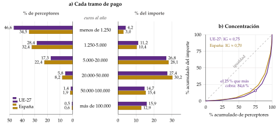
Fuente: Comisión Europea, DG AGRI, Indicative figures on the distribution of aid, ejercicio financiero 2023; agregación en 6 tramos de elaboración propia.
II.3.2. La capitalización de las ayudas en la tierra
a) Idea
¿Quién se queda con un pago por hectárea? Si la tierra es el factor escaso y el pago está ligado a ella, la competencia por arrendarla o comprarla traslada el pago a su propietario, que puede no ser quien la cultiva. Es la vieja teoría de la renta de Ricardo aplicada a la PAC [ver tema 3.A.2].
b) Modelo
i) Supuestos
Un mercado competitivo de arrendamiento de tierra: la demanda es el valor del producto marginal de la tierra, \(\mathit{VPMg}_T\), decreciente; la oferta, \(T^S(R)\), es muy rígida (la tierra agraria apenas puede aumentar).
Un pago de \(s\) euros por hectárea, que solo cobra quien cultiva la tierra (el arrendatario).
El precio de la tierra es el valor actual de sus rentas futuras, descontadas al tipo \(i\).
ii) Desarrollo
Paso 1: el pago aumenta en \(s\) lo que vale para el arrendatario cada hectárea: la demanda de tierra se desplaza hacia arriba en \(s\) (gráfico 6).
Paso 2: la incidencia. Es la de una subvención a los compradores: la renta sube según las elasticidades de la demanda y de la oferta de tierra [ver tema 4.B.8]:
\[\frac{\Delta R}{s}=\frac{|\varepsilon_D|}{|\varepsilon_D|+\varepsilon_S}\qquad\Delta P_T=\frac{\Delta R}{i}\tag{3}\]
con oferta rígida (\(\varepsilon_S=0\)), \(\Delta R=s\): todo el pago acaba en el propietario;
con oferta algo elástica (tierras marginales que entran en cultivo), una parte se queda en el agricultor.
Paso 3: el precio de la tierra. Si el pago se espera permanente, el precio de la tierra sube en el valor actual de la mayor renta, \(\Delta R/i\): con \(i=2~\%\), un pago de 200 euros por hectárea que se capitalice entero sube el precio de la hectárea en 10.000 euros.
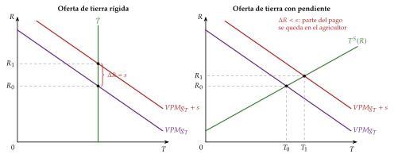
Fuente: elaboración propia. Demanda \(R=5-0{,}5T\), pago \(s=1\); a la izquierda, \(\bar T=5\) (\(\Delta R=1\)); a la derecha, oferta \(R=0{,}5+0{,}4T\) (\(\Delta R=0{,}44\)).
iii) Implicaciones
El beneficiario no es quien se pretende: la ayuda a la renta del agricultor se convierte en parte en renta del propietario de la tierra, que puede no ser agricultor.
Barrera de entrada: la tierra se encarece, lo que dificulta la instalación de los jóvenes y el crecimiento de las explotaciones eficientes.
Inercia: quien compró la tierra pagando el valor capitalizado de las ayudas pierde si se suprimen: los pagos crean derechos adquiridos y resistencia a la reforma (la «trampa de las ganancias transitorias» de Gordon Tullock).
c) Evidencia empírica
Estados Unidos: Kirwan (2009) estima que los arrendadores se quedan con en torno a 25 céntimos de cada dólar de ayuda, menos de lo que predice el modelo simple por la competencia imperfecta en el mercado de arrendamiento.
Unión Europea: Ciaian y Kancs (2012), con datos de 7 nuevos Estados miembros, encuentran que las rentas captan unos 19 céntimos de cada euro de pago por superficie; con la reforma de 2013, Ciaian, Kancs y Espinosa (2018) estiman tasas mucho mayores en los nuevos Estados (en torno al 72-76 %) que en los antiguos (del 20 al 39 %), donde los derechos de pago históricos separaban en parte el pago de la tierra.
d) Valoración
El modelo explica por qué los pagos por hectárea son un mal instrumento de apoyo a la renta del agricultor y por qué es tan difícil reformarlos.
No recoge las rigideces del arrendamiento (contratos largos, rentas reguladas) ni que muchos agricultores son también propietarios, lo que explica que la capitalización medida sea menor que la teórica.
II.3.3. Relevo generacional, medio ambiente y clima
Menos explotaciones y más viejas: la Unión tenía 9,1 millones de explotaciones en 2020 y 8,8 millones en 2023, casi un 40 % menos que en 2005; el 63 % tiene menos de 5 hectáreas.
En 2020, solo el 11,9 % de los titulares tenía menos de 40 años, y el 33,2 %, 65 o más; en España, el 7,7 % y el 41,3 %.
Las barreras de entrada son la tierra (el precio medio de la hectárea arable en la Unión subió de unos 11.000 euros en 2018 a 15.200 en 2024), el capital y el acceso al crédito; la capitalización de las ayudas las agrava (II.3.2).
La Comisión aprobó en octubre de 2025 una estrategia de relevo generacional que quiere duplicar la proporción de jóvenes agricultores hasta 2040.
Medio ambiente y clima: la PAC ha ido incorporando el medio ambiente (condicionalidad, pago verde, arquitectura verde), pero con resultados modestos:
el Tribunal de Cuentas Europeo concluyó que los más de 100.000 millones de gasto de la PAC 2014-2020 atribuidos al clima apenas redujeron las emisiones agrarias, que no bajan desde 2010;
la estrategia «de la granja a la mesa» del Pacto Verde (2020) fijó para 2030 reducir un 50 % el uso de plaguicidas químicos y llegar al 25 % de superficie ecológica, pero el reglamento de plaguicidas se retiró en 2024 tras las protestas y la Visión de 2025 prefiere incentivos a obligaciones [ver tema 3.B.31];
el problema económico de fondo es el de una externalidad: mientras emitir o contaminar no tenga precio, pagar por no hacerlo (el principio de «proveedor-receptor») es la alternativa políticamente viable al de «quien contamina paga» [ver tema 3.A.23].
II.3.4. Comercio exterior y ampliación
La OMC: la PAC actual cumple con holgura el Acuerdo sobre la Agricultura: las restituciones se eliminaron (Nairobi, 2015) y casi toda la ayuda interna de la Unión se notifica en la caja verde. Los aranceles agrícolas de la Unión siguen siendo altos y complejos, con contingentes arancelarios en los productos sensibles [ver tema 3.B.33] [ver tema 3.B.41].
Ucrania: tras la invasión rusa, la Unión liberalizó en 2022 todas sus importaciones ucranianas (medidas comerciales autónomas), lo que en 2023 provocó protestas y prohibiciones unilaterales de Polonia, Hungría y Eslovaquia. Las medidas vencieron el 5 de junio de 2025 y el acuerdo comercial revisado, en vigor desde el 29 de octubre de 2025, amplía algo los contingentes (azúcar, aves, huevos, trigo, maíz, miel) a cambio de que Ucrania adopte las normas de producción de la Unión antes de 2028, con una salvaguardia bilateral.
La ampliación: con sus 41 millones de hectáreas agrarias y explotaciones muy grandes, la entrada de Ucrania con las reglas actuales absorbería una parte importante de la PAC; un estudio interno del Consejo que publicó la prensa en 2023 calculaba en torno a 96.500 millones en 7 años. Es otro argumento para pagos degresivos y ligados a resultados [ver tema 3.B.36].
El Mercosur: el acuerdo comercial se aplica de forma provisional desde el 1 de mayo de 2026; para responder a la protesta agraria, la Unión aprobó en marzo de 2026 una salvaguardia bilateral para los productos sensibles (vacuno, aves, azúcar, huevos, cítricos…), que se activa si las importaciones suben un 5 % sobre la media de los 3 años anteriores y los precios de importación están un 5 % por debajo de los internos [ver tema 3.B.35].
II.3.5. La PAC después de 2027
La propuesta (Comisión, 16 de julio de 2025), dentro del MFP 2028-2034 [ver tema 3.B.37]:
desaparecen los 2 pilares y los 2 fondos: la PAC pasa a un Fondo de Planes Nacionales y Regionales de Asociación de 865.000 millones de euros, que comparte con la cohesión, la pesca, la migración y la seguridad; cada Estado tendría un único plan;
un mínimo reservado de 300.000 millones: 293.700 para la ayuda a la renta y 6.300 para una red de seguridad frente a crisis; los Estados pueden añadir más de su sobre;
ayuda a la renta degresiva: se reduce un 25 % entre 20.000 y 50.000 euros, un 50 % entre 50.000 y 75.000 y un 75 % por encima, con un tope obligatorio de 100.000 euros por agricultor y año; los jubilados dejarían de cobrarla;
medio ambiente: la condicionalidad pasa a ser un conjunto de «prácticas protectoras» que fija cada Estado, y los ecorregímenes se funden con las medidas agroambientales, sin mínimo de gasto.
Las reacciones: las organizaciones agrarias, el Parlamento y buena parte de los Estados (también España) temen una renacionalización de la PAC y que el dinero agrario compita con otras prioridades. La Comisión añadió en otoño de 2025 un objetivo rural (al menos el 10 % de cada plan) y en enero de 2026 ofreció adelantar a 2028 hasta 2 tercios de la revisión intermedia (unos 45.000 millones) para la agricultura.
El estado de la negociación (noviembre de 2026):
el Parlamento pide 385.100 millones reservados para la PAC y su ponente propone volver a los 2 pilares, sin degresividad y con un tope de 500.000 euros;
en el Consejo, las cajas de negociación de 2026 reservan para la renta agraria en torno a 261.000-265.000 millones (a precios de 2025), y la degresividad y el tope siguen entre corchetes;
el Consejo Europeo extraordinario del 26-27 de noviembre de 2026 debe intentar cerrar el marco antes de fin de año.
Valoración económica: un plan por Estado da flexibilidad y permite ligar el dinero a resultados (como el Mecanismo de Recuperación), pero arriesga distorsiones de la competencia entre agricultores de distintos Estados y una carrera por complementar las ayudas con fondos nacionales, justo lo que la PAC común nació para evitar (I.1.2).
Recapitulación del bloque II: la PAC ha cambiado de instrumento, del precio al pago y del pago a las condiciones, y con ello ha resuelto los excedentes y el conflicto comercial. Sus problemas de hoy son de reparto (quién cobra y quién se queda el pago), de resultados ambientales y de legitimidad. Pasamos a la otra política de recursos naturales de la Unión, la pesca, donde el problema económico es distinto: no los excedentes, sino la escasez.
III. La política pesquera común
Pasamos a la segunda política del título, que comparte con la PAC base jurídica pero no problema económico.
Conclusión anticipada: la pesca explota un recurso común; sin reglas, el libre acceso disipa la renta y agota las poblaciones. La PPC nació en 1983 para repartir el acceso (TAC y cuotas) y ha tardado 30 años en convertirse en una política de conservación: desde 2013 busca el rendimiento máximo sostenible, y la presión pesquera ha bajado mucho en el Atlántico, pero no en todas las poblaciones ni a tiempo, y el Mediterráneo sigue sobreexplotado.
III.1. Justificación, naturaleza y objetivos
III.1.1. Relevancia
Un sector pequeño, muy concentrado en algunas costas: la Unión capturó 3,3 millones de toneladas en 2025, con un valor desembarcado de 5.500 millones de euros, frente a 5,9 millones de toneladas en 2001 (gráfico 7); su flota tiene unos 68.000 buques y emplea a más de 155.000 personas. 22 de los 27 Estados tienen costa (Austria, Chequia, Eslovaquia, Hungría y Luxemburgo no).
Dependiente del exterior: la Unión solo produce en torno al 38 % del pescado que consume (22,9 kilos por habitante en 2023) e importa casi 6 millones de toneladas al año.
Para España, la primera potencia pesquera de la Unión: el 31 % del valor desembarcado y el 21 % del peso, la mayor flota en tonelaje (el 24 % del arqueo de la Unión, con 8.324 buques) y el segundo consumo por habitante (40,7 kilos) [ver tema 4.A.4].
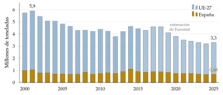
Fuente: Eurostat, fish_ca_main y Statistics Explained. Desde 2016, el total de la Unión es la estimación redondeada de Eurostat (barras tramadas), porque algunos datos nacionales son confidenciales.
III.1.2. Justificación económica
Eficiencia: un caladero es un recurso común: rival (lo que pesca un barco no lo pesca otro) y difícilmente excluible en el mar. Cada pescador ignora el efecto de su captura sobre la población y sobre los demás, y el resultado es la tragedia de los comunes de Hardin (1968): sobreexplotación [ver tema 3.A.23]. Además, las poblaciones cruzan fronteras, así que ningún Estado puede gestionarlas solo.
Equidad: hay comunidades costeras que dependen casi por completo de la pesca, y un trabajo con condiciones muy duras (aislamiento, siniestralidad), que la legislación española reconoce con un régimen especial de protección social.
Por qué común: tras la ampliación de las zonas económicas a 200 millas (1977), las aguas de los Estados forman un solo espacio, con libre acceso entre ellos más allá de las 12 millas, y la Unión negocia en bloque con terceros países.
III.1.3. El modelo de Gordon y Schaefer
a) Idea
Gordon (1954) mostró por qué una pesquería de libre acceso acaba pobre aunque el mar sea rico: los barcos entran mientras haya beneficio, y el beneficio desaparece. Combinado con el modelo biológico de Schaefer (1954), permite comparar 3 puntos que la política pesquera confunde a menudo: el libre acceso, el rendimiento máximo sostenible (RMS), objetivo de la PPC desde 2013, y el máximo rendimiento económico (MRE).
b) Modelo
i) Supuestos
Una población de peces con biomasa \(X\) que crece de forma logística: \(G(X)=\gamma X\left(1-X/\bar X\right)\), con tasa intrínseca \(\gamma\) y capacidad de carga \(\bar X\).
La captura es proporcional al esfuerzo pesquero \(E\) (barcos por días de mar) y a la biomasa: \(H=\theta E X\).
Precio del pescado \(p\) dado y coste constante \(c\) por unidad de esfuerzo.
Se comparan estados estacionarios (sin descuento): la población está en equilibrio cuando la captura iguala el crecimiento.
ii) Desarrollo
Paso 1: biología. La biomasa evoluciona según \[\dot X=\gamma X\left(1-\frac{X}{\bar X}\right)-\theta E X,\] y, en el estado estacionario, \(X(E)=\bar X\left(1-\theta E/\gamma\right)\): más esfuerzo, menos peces (gráfico 8, panel izquierdo).
Paso 2: la captura sostenible. Sustituyendo, \(Y(E)=\theta\bar X E\left(1-\theta E/\gamma\right)\), una parábola: al principio, más esfuerzo da más captura; a partir de cierto punto, el esfuerzo agota la población y la captura cae.
El rendimiento máximo sostenible está en \(E_{\mathit{RMS}}=\gamma/(2\theta)\), con biomasa \(\bar X/2\) y captura \(\gamma\bar X/4\).
Paso 3: libre acceso. Entran barcos mientras el ingreso supera al coste; en equilibrio, la renta se disipa: \(pY(E)=cE\), de donde \[X_{\mathit{LA}}=\frac{c}{p\theta},\qquad E_{\mathit{LA}}=\frac{\gamma}{\theta}\left(1-\frac{c}{p\theta\bar X}\right).\]
Paso 4: el máximo rendimiento económico. Un propietario único (o un regulador) maximiza la renta \(pY(E)-cE\): iguala el ingreso marginal del esfuerzo a su coste, \(pY'(E)=c\), y resulta
\[E_{\mathit{MRE}}=\tfrac12\,E_{\mathit{LA}}\;<\;E_{\mathit{RMS}}\qquad\text{y}\qquad X_{\mathit{MRE}}>X_{\mathit{RMS}}\tag{4}\]
(panel derecho del gráfico 8). Y si el coste es bajo (\(c<p\theta\bar X/2\)), el libre acceso pesca incluso más allá del RMS: \(E_{\mathit{LA}}>E_{\mathit{RMS}}\) y la población queda por debajo de \(\bar X/2\) (desarrollo en el anexo B).
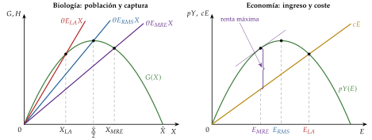
iii) Implicaciones
El libre acceso es doblemente ineficiente: usa demasiado esfuerzo (barcos y combustible) para pescar lo mismo o menos, y la renta del recurso, que podría ser grande, se disipa en costes.
El RMS no es el óptimo económico: el MRE pesca algo menos con mucho menos esfuerzo y deja más peces en el agua, lo que además da un colchón frente a la incertidumbre. El RMS es un objetivo biológico, fácil de comunicar y recogido en la Convención de las Naciones Unidas sobre el Derecho del Mar, y por eso lo adoptó la PPC.
Las subvenciones que bajan el coste (gasóleo, construcción de buques) desplazan el libre acceso hacia más esfuerzo y menos peces: por eso la OMC prohíbe desde 2025 las que contribuyen a la sobrepesca [ver tema 3.B.33].
c) Extensiones
Con descuento: si el futuro se descuenta a una tasa \(\delta\), la biomasa óptima está entre la del MRE (\(\delta=0\)) y la del libre acceso (\(\delta\to\infty\)): conservar peces es una inversión que rinde su crecimiento marginal, y se pesca hasta que ese rendimiento iguala \(\delta\).
Los instrumentos:
un TAC global fija la captura pero no el esfuerzo: los barcos compiten por pescar antes (la «carrera por el pescado»), la renta se sigue disipando y las temporadas se acortan;
las limitaciones de esfuerzo (días de mar, potencia) llevan a invertir en lo que no se limita;
las cuotas individuales transferibles (CIT) reparten el TAC en derechos que se pueden vender: la cuota acaba en los barcos más eficientes, su precio refleja la renta del recurso y desaparece la carrera. Es la solución de Coase: definir derechos de propiedad2 [ver tema 3.A.23]. Su coste es la concentración: los armadores grandes compran la cuota de los pequeños;
la gestión comunitaria que estudió Elinor Ostrom3: comunidades que se dan reglas propias para usar el recurso sin agotarlo; en España, las cofradías de pescadores han cumplido ese papel en muchos caladeros costeros.
Poblaciones compartidas: si 2 países pescan la misma población sin acuerdo, cada uno ignora el daño que hace al otro y el resultado se parece al libre acceso: es la «guerra del pescado» de Levhari y Mirman (1980), y la razón de que la Unión negocie cada año los TAC con el Reino Unido, Noruega o las Islas Feroe.
d) Evidencia empírica
En el mundo: según la FAO, el 37,6 % de las poblaciones marinas evaluadas se explotaba en 2023 a niveles no sostenibles (el 10 % en 1974); en el Mediterráneo y el mar Negro, solo el 45,7 % era sostenible. El Banco Mundial estima que la sobrepesca hace perder 83.000 millones de dólares de renta al año.
Las CIT funcionan: con datos de más de 11.000 pesquerías, Costello, Gaines y Lynham (2008) encuentran que la gestión con cuotas individuales transferibles reduce a la mitad la probabilidad de colapso de una pesquería.
En la Unión: la mortalidad por pesca del Atlántico nororiental, que en 2003 era un 50 % mayor que la del RMS, está hoy por debajo; en el Mediterráneo bajó mucho más tarde (gráfico 9).
e) Valoración
Es un modelo muy simple (una sola especie, sin incertidumbre ni interacciones en el ecosistema), pero su lección es robusta: el libre acceso disipa la renta y agota el recurso, y hacen falta reglas, derechos o ambos.
Explica la evolución de la PPC: primero se repartió el acceso entre Estados sin limitar de verdad la captura; después se fijó un objetivo biológico (el RMS); queda por resolver el reparto eficiente dentro de cada Estado, que la PPC deja a cada uno (algunos, como Dinamarca o los Países Bajos, usan cuotas transferibles).
III.1.4. Marco jurídico
Competencias: la conservación de los recursos biológicos marinos es competencia exclusiva de la Unión (artículo 3.1.d del TFUE); el resto de la pesca, compartida (artículo 4.2.d).
Base jurídica: los mismos artículos 38 a 43 que la PAC. El Consejo, a propuesta de la Comisión y sin el Parlamento, fija cada año las posibilidades de pesca (artículo 43.3); el resto (planes plurianuales, medidas técnicas, el fondo) sigue el procedimiento legislativo ordinario.
Objetivos (Reglamento (UE) 1380/2013, artículo 2): pesca sostenible a largo plazo, explotación al RMS, enfoque ecosistémico y de precaución, eliminación gradual de los descartes, condiciones para un sector rentable y competitivo, un nivel de vida justo para quien depende de la pesca y abastecimiento al consumidor.
Recapitulación del III.1: el problema de la pesca es el contrario al de la agricultura: no sobra producto, falta recurso. Veamos cómo lo ha abordado la PPC.
III.2. Análisis histórico: la PPC de 1983
Los orígenes: el Tratado de Roma trataba la pesca como un producto agrícola. Las primeras normas (1970) establecieron la igualdad de acceso a las aguas de los Estados miembros y una organización común de mercado, justo antes de la adhesión de 3 países pesqueros (Reino Unido, Irlanda y Dinamarca); Noruega rechazó entrar en 1972, en parte por la pesca. En 1977 los Estados ampliaron sus zonas de pesca a 200 millas, y la Convención de las Naciones Unidas sobre el Derecho del Mar (1982) consagró las zonas económicas exclusivas.
La PPC de 1983 (Reglamento 170/83) se organizó en 4 ejes:
recursos: el Consejo fija cada año un total admisible de capturas (TAC) por población y zona, que se reparte en cuotas nacionales con un porcentaje fijo, la estabilidad relativa, basado en las capturas históricas; se reserva a los barcos locales la franja de 12 millas, y se añaden medidas técnicas (mallas, tallas mínimas, vedas);
estructuras: programas de orientación plurianuales para modernizar la flota y ajustar su capacidad, financiados primero por el FEOGA y después por fondos propios (IFOP, 1994; Fondo Europeo de Pesca, 2007; FEMP, 2014; FEMPA, 2021);
mercados: la OCM de los productos de la pesca, con precios de orientación y de retirada (mucho más bajos que los agrarios, como red de seguridad), organizaciones de productores, normas de comercialización y un régimen de importación abierto, porque la Unión es deficitaria;
exterior: acuerdos con terceros países (de reciprocidad, como con Noruega; con contrapartida financiera, sobre todo con países africanos) y participación en las organizaciones regionales de ordenación pesquera (OROP).
España: su adhesión (1986) casi duplicó la capacidad pesquera comunitaria. Se pactó un periodo transitorio restrictivo de acceso a las aguas comunitarias, que se adelantó y terminó el 1 de enero de 1996.
Los problemas: el Consejo fijaba los TAC por encima de lo que recomendaban los científicos; los programas de flota no lograron reducir la capacidad (las ayudas a la construcción la aumentaban); los descartes ocultaban la presión real, y el Mediterráneo quedaba casi fuera de los TAC.
III.3. Desarrollo y reformas: 2002 y 2013
La reforma de 2002 (Reglamento 2371/2002):
horizonte plurianual: planes de recuperación para las poblaciones fuera de límites biológicos seguros y planes de gestión plurianuales, para que los TAC no se decidieran solo año a año;
flota: régimen de entradas y salidas (no se puede añadir capacidad sin retirar otra equivalente) y fin de las ayudas públicas a la construcción de buques;
gobernanza: consejos consultivos regionales con el sector y las organizaciones ambientales, y lucha contra la pesca ilegal, no declarada y no reglamentada (INDNR), con el Reglamento 1005/2008 y su sistema de tarjetas amarillas y rojas a los países que no cooperan.
La reforma de 2013 (Reglamento 1380/2013), la primera con el Parlamento como colegislador:
el objetivo del RMS: explotar todas las poblaciones al nivel del rendimiento máximo sostenible, si era posible en 2015 y como muy tarde en 2020;
la obligación de desembarque: se acaba con los descartes; todas las capturas de especies con TAC deben llevarse a puerto y descontarse de la cuota, de forma gradual entre 2015 y 2019;
regionalización: los Estados de cada cuenca proponen en común las medidas técnicas, y hay 11 consejos consultivos;
flota: cada Estado debe ajustar su capacidad a sus posibilidades de pesca; se protege la pesca artesanal (12 millas) y las regiones ultraperiféricas (hasta 100 millas para su flota local);
mercados: una nueva OCM (Reglamento 1379/2013) con etiquetado obligatorio (especie, zona y arte de pesca) y planes de producción y comercialización de las organizaciones de productores.
III.4. Situación actual
El estado de las poblaciones
Atlántico nororiental: la mortalidad por pesca (mediana de \(F/F_{\mathit{RMS}}\)) ha bajado de 1,51 en 2003 a 0,70 en 2024, y la proporción de poblaciones sobrepescadas, de casi 2 tercios a menos de un tercio; en 2026, el 81 % de las posibilidades de pesca del Atlántico se fijó en línea con el RMS (gráfico 9).
Pero el objetivo de 2020 no se cumplió: en 2024 solo el 29 % de las poblaciones estaba a la vez por debajo de \(F_{\mathit{RMS}}\) y dentro de límites biológicos seguros, y las que están fuera de esos límites han vuelto a subir (del 41 % en 2021 al 47 % en 2024). En las poblaciones compartidas el acuerdo es más difícil: en 2026 la Unión fijó el TAC de la caballa un 71 % por encima de lo que recomendaba el Consejo Internacional para la Exploración del Mar (ICES), para alinearlo con el del Reino Unido, Noruega, Islandia y las Islas Feroe.
Mediterráneo y mar Negro: las poblaciones sobrepescadas han bajado del 83 % en 2007 al 47 % en 2023. En el Mediterráneo occidental rige desde 2019 un plan plurianual que limita los días de pesca de los arrastreros (Reglamento 2019/1022); para 2026, el Consejo les dio 143 días de pesca, frente a los 9,7 que proponía la Comisión, que se opuso formalmente al acuerdo.
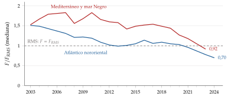
Fuente: CCTEP (STECF), Monitoring the performance of the Common Fisheries Policy (STECF-Adhoc-26-01). Mediana del indicador; la serie del Mediterráneo llega a 2023.
La acción exterior y el Brexit
Acuerdos de colaboración de pesca sostenible: la Unión tiene 11 protocolos en vigor (Groenlandia, Guinea-Bisáu, Seychelles, Cabo Verde…; el de Mauritania, el mayor, vence el 14 de noviembre de 2026) y otros 9 acuerdos sin protocolo, como el de Marruecos, que el Tribunal de Justicia anuló en 2024 en lo que afecta al Sáhara Occidental. Paga acceso y apoyo sectorial a cambio de pescar los excedentes que el país no captura.
OROP: participa en 5 organizaciones atuneras (como la Comisión Internacional para la Conservación del Atún Atlántico) y en 13 no atuneras.
El Brexit: el Acuerdo de Comercio y Cooperación (2020) transfirió al Reino Unido el 25 % del valor de las capturas de la Unión en sus aguas en 5 años y medio, hasta el 30 de junio de 2026. En mayo de 2025 se pactó prorrogar el acceso recíproco a las aguas hasta el 30 de junio de 2038; los TAC de las unas 100 poblaciones compartidas se negocian cada año.
Control: el nuevo régimen de control (Reglamento 2023/2842) generaliza la localización de los buques, digitaliza la trazabilidad (el sistema CATCH es obligatorio para las importaciones desde enero de 2026) y exigirá cámaras a bordo desde 2028 en los buques de más de 18 metros con riesgo de incumplir la obligación de desembarque.
El FEMPA y el futuro de la PPC
El Fondo Europeo Marítimo, de Pesca y de Acuicultura (FEMPA, Reglamento 2021/1139) tiene 6.108 millones de euros para 2021-2027, 5.311 de ellos en gestión compartida, y 4 prioridades: pesca sostenible, acuicultura y transformación, economía azul de las zonas costeras y gobernanza de los océanos. España es su primer perceptor, con 1.120 millones (el 21 %). Su mecanismo de crisis compensó a la flota por la subida del gasóleo en 2022 y de nuevo en 2026.
La evaluación de la PPC (Comisión, abril de 2026) concluye que la presión pesquera ha bajado de forma clara, pero que el RMS no se alcanzó en todas las poblaciones en 2020, que la obligación de desembarque no cambió el comportamiento de la flota (los descartes no se han reducido), que la rentabilidad es menor de la esperada y que crece la dependencia de las importaciones; aun así, considera la PPC una herramienta válida.
El Pacto Europeo por los Océanos (junio de 2025) y la Visión 2040 de la pesca y la acuicultura (octubre de 2026) optan por aplicar mejor el marco actual en lugar de reformar el reglamento, con una Ley del Océano prevista para principios de 2027, una propuesta sobre acuicultura y un plan de relevo generacional en el mar. El plan de acción para el medio marino (2023) pide eliminar la pesca de arrastre de fondo en las áreas marinas protegidas antes de 2030, sin carácter vinculante.
Después de 2027: la pesca entraría, como la PAC, en el fondo único de los planes nacionales y regionales [ver tema 3.B.37].
Recapitulación del bloque III: la PPC ha pasado de repartir el acceso a gestionar el recurso con un objetivo biológico, y ha reducido la presión pesquera. Sus debilidades son las que predice el modelo: decisiones políticas por encima de la ciencia en los TAC, poblaciones compartidas con terceros y una flota que sigue siendo grande para lo que hay que pescar.
Conclusión
Recapitulación:
En conclusión, la PAC nació para que Europa no volviera a pasar hambre y lo consiguió con precios garantizados, pero a costa de excedentes, gasto y conflictos comerciales. Sus reformas han separado los instrumentos: el precio, para el mercado; un pago desacoplado, para la renta; condiciones y contratos, para el medio ambiente.
La PPC tiene el problema contrario, la escasez de un recurso común, y desde 2013 lo aborda con el objetivo del RMS.
Relevancia:
Son las 2 políticas más «comunes» de la Unión y casi un tercio de su presupuesto, y España es de sus mayores beneficiarios.
Extensiones:
El presupuesto y el marco 2028-2034 [ver tema 3.B.37], la política comercial y el Mercosur [ver tema 3.B.35] [ver tema 3.B.41], la OMC [ver tema 3.B.33], la cohesión y el desarrollo rural [ver tema 3.B.40], el cambio climático [ver tema 3.B.31], los fallos de mercado [ver tema 3.A.23] y los sectores agrario y pesquero en España [ver tema 4.A.4].
Opinión:
El camino es pagar por lo que la sociedad quiere comprar (bienes públicos, gestión del riesgo, relevo) y no por hectárea; y, en el mar, completar el RMS con derechos bien definidos. Un fondo único puede ayudar si viene con objetivos comunes exigentes, no si sirve para renacionalizar.
Idea final:
Volvamos al refrán: aunque la mona se vista de seda, mona se queda. Cada reforma le ha puesto a la PAC un traje nuevo, pero mientras se pague por tonelada, por hectárea o por derecho histórico, el apoyo seguirá yendo a los más grandes, igual que en el mar, sin reglas, el barco grande vacía el caladero; las reformas buenas son las que cambian el instrumento y no solo el nombre, con un instrumento para cada objetivo. Una política común sí puede sostener a la vez la renta, los recursos y el bolsillo del contribuyente, pero solo si paga por objetivos y no por tamaño.
A. Anexo: los precios institucionales y la «Europa verde» monetaria
El sostenimiento de precios como impuesto y subvención: un precio garantizado \(p^I>p^W\) en un país que comercia equivale a 2 instrumentos a la vez:
un impuesto al consumo de \(p^I-p^W\) por unidad, que pagan los consumidores;
una subvención a la producción del mismo importe, que cobran los productores.
Por eso tiene 2 triángulos de pérdida: el impuesto distorsiona el consumo (\(b\)) y la subvención, la producción (\(d\)). Una ayuda solo a la producción (los pagos compensatorios de MacSharry) elimina el triángulo \(b\), y una desacoplada, los 2.
Los precios de la PAC antigua (cereales, por ejemplo): el precio indicativo se fijaba para la zona más deficitaria (Duisburgo); el de intervención, algo por debajo; el de umbral, en el puerto (Róterdam), de modo que, sumados los costes de transporte, el cereal importado no llegara a Duisburgo por debajo del indicativo. La exacción variable cubría la diferencia entre el precio de umbral y el precio CIF más bajo del mercado mundial.
La unidad de cuenta agrícola y los tipos verdes: los precios comunes se fijaban en una unidad de cuenta con la paridad oro del dólar. Tras la devaluación del franco y la revaluación del marco (1969), aplicar el tipo de mercado habría subido los precios agrarios en Francia y los habría bajado en Alemania; se crearon tipos de cambio específicos para la agricultura (los tipos «verdes») y montantes compensatorios monetarios que gravaban o subvencionaban el comercio entre Estados para compensar la diferencia. Fragmentaron de hecho el mercado único agrario hasta que el mercado interior los suprimió en 1993; con el euro (1999) desaparecieron los tipos verdes entre los Estados del euro.
B. Anexo: el modelo de Gordon-Schaefer paso a paso
Estado estacionario: con \(\dot X=0\) y \(X>0\), \(\gamma\left(1-X/\bar X\right)=\theta E\), luego \(X(E)=\bar X\left(1-\theta E/\gamma\right)\), positiva si \(E<\gamma/\theta\).
Captura sostenible: \(Y(E)=\theta E\,X(E)=\theta\bar X E-\dfrac{\theta^2\bar X}{\gamma}E^2\).
\(Y'(E)=\theta\bar X\left(1-2\theta E/\gamma\right)=0\Rightarrow E_{\mathit{RMS}}=\dfrac{\gamma}{2\theta}\), \(X_{\mathit{RMS}}=\dfrac{\bar X}{2}\), \(Y_{\mathit{RMS}}=\dfrac{\gamma\bar X}{4}\).
Libre acceso: la renta \(\pi(E)=pY(E)-cE=E\left[p\theta X(E)-c\right]\) se anula con \(E>0\) si \(p\theta X=c\):
\(X_{\mathit{LA}}=\dfrac{c}{p\theta}\) y \(E_{\mathit{LA}}=\dfrac{\gamma}{\theta}\left(1-\dfrac{c}{p\theta\bar X}\right)\), positivo si \(c<p\theta\bar X\) (si no, no compensa pescar).
\(E_{\mathit{LA}}>E_{\mathit{RMS}}\iff 1-\dfrac{c}{p\theta\bar X}>\dfrac12\iff c<\dfrac{p\theta\bar X}{2}\): con costes bajos o precios altos, el libre acceso sobreexplota en sentido biológico.
Máximo rendimiento económico: \(\pi'(E)=p\theta\bar X\left(1-\dfrac{2\theta E}{\gamma}\right)-c=0\), luego \[E_{\mathit{MRE}}=\frac{\gamma}{2\theta}\left(1-\frac{c}{p\theta\bar X}\right)=\frac{E_{\mathit{LA}}}{2}<E_{\mathit{RMS}}\quad\text{y}\quad X_{\mathit{MRE}}=\frac{\bar X}{2}\left(1+\frac{c}{p\theta\bar X}\right)>X_{\mathit{RMS}}.\] Con \(c=0\), el MRE coincide con el RMS: la diferencia entre ambos la crea el coste del esfuerzo.∎
Con descuento (Clark (1990)): si se maximiza el valor actual de la renta a la tasa \(\delta\) con coste por unidad de captura \(c/(\theta X)\), la biomasa óptima \(X^*\) cumple la «regla de oro» de la pesca \[G'(X^*)+\frac{c\,G(X^*)}{\theta X^{*2}\big(p-c/(\theta X^*)\big)}=\delta,\] que da \(X^*=X_{\mathit{MRE}}\) con \(\delta=0\) y tiende a \(X_{\mathit{LA}}\) cuando \(\delta\to\infty\): un propietario muy impaciente se comporta como el libre acceso. Si \(\delta\) supera la tasa máxima de crecimiento \(\gamma\) y el coste es bajo, puede ser óptimo incluso agotar la población.
C. Anexo: conceptos
Pilares de la PAC: el primero (FEAGA) son los pagos directos y las medidas de mercado, financiados al 100 % por la Unión; el segundo (FEADER), el desarrollo rural, cofinanciado por los Estados.
Modulación: transferencia obligatoria o voluntaria de fondos del primer pilar al segundo (2003-2013); hoy los Estados pueden pasar dinero entre pilares en sus planes.
Disciplina financiera: reducción lineal de los pagos directos si se prevé superar el sublímite anual del FEAGA.
Derechos de pago: títulos ligados a hectáreas admisibles que daban derecho al pago único y al pago básico; algunos Estados los mantienen en la ayuda básica a la renta (España los mantiene, con convergencia).
BCAM y RLG: buenas condiciones agrarias y medioambientales y requisitos legales de gestión, las 2 partes de la condicionalidad.
Estabilidad relativa: clave fija de reparto entre Estados de los TAC de la Unión, basada en las capturas históricas de 1973-1978 y en las necesidades de las regiones dependientes de la pesca (preferencias de La Haya).
Esfuerzo pesquero: capacidad de un buque (arqueo o potencia) por su actividad (días de mar).
Pesca INDNR: ilegal, no declarada y no reglamentada.
D. Anexo: preguntas de test
Preguntas tipo test del primer ejercicio: simulador de test.
Bibliografía
Jan Tinbergen recibió el Premio Nobel de Economía en 1969, con Ragnar Frisch, «por haber desarrollado y aplicado modelos dinámicos para el análisis de los procesos económicos».↩︎
Ronald Coase recibió el Premio Nobel de Economía en 1991 «por su descubrimiento y clarificación de la importancia de los costes de transacción y los derechos de propiedad para la estructura institucional y el funcionamiento de la economía».↩︎
Elinor Ostrom recibió el Premio Nobel de Economía en 2009 «por su análisis de la gobernanza económica, en especial de los bienes comunes», compartido con Oliver Williamson.↩︎